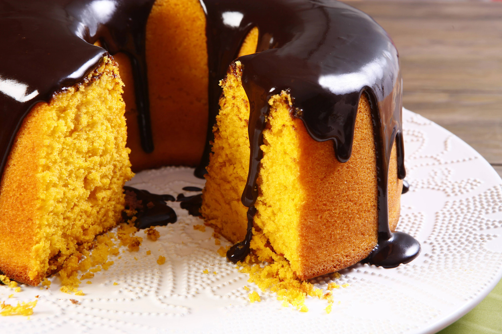

Bolo de Cenoura com Chocolate
O bolo de cenoura com chocolate é um clássico que combina com café da manhã ou lanche da tarde.
Preparo
30 Min
Rendimento
10 Porções
Comentarios
27
Ingredientes
-
4
Ovos -
500g
Farinha de Trigo -
200ml
Óleo Mineral -
400ml
Leite -
3 Colheres de Sopa
Fermento -
500g
Fubá
Modo de Preparo
Preparando
Essa parte esta em manutenção...
Essa parte esta em manutenção...